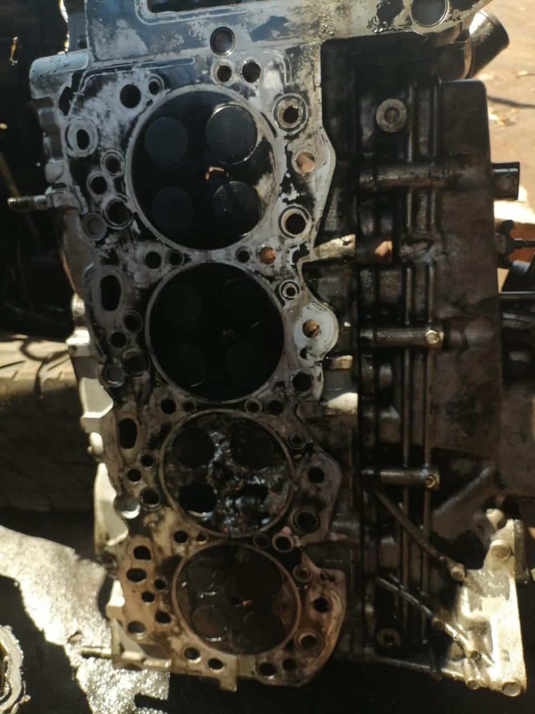
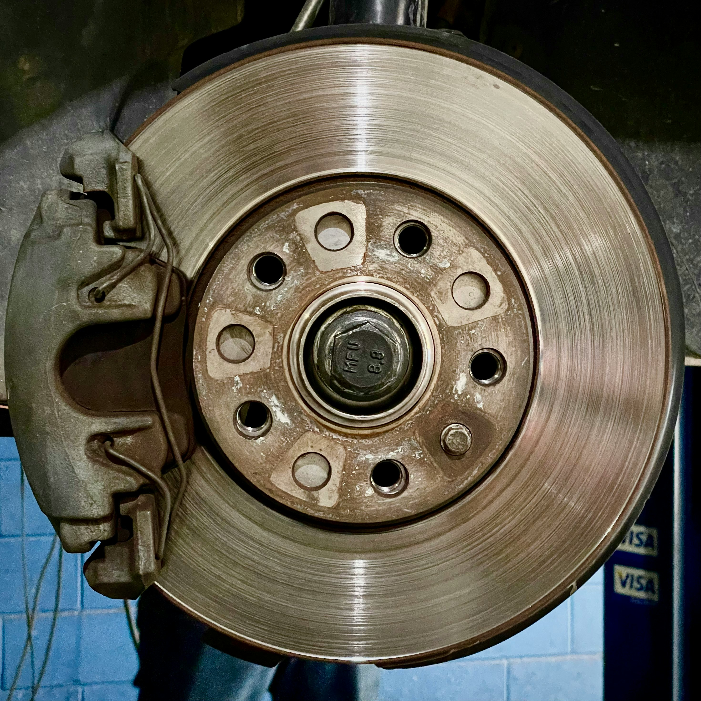
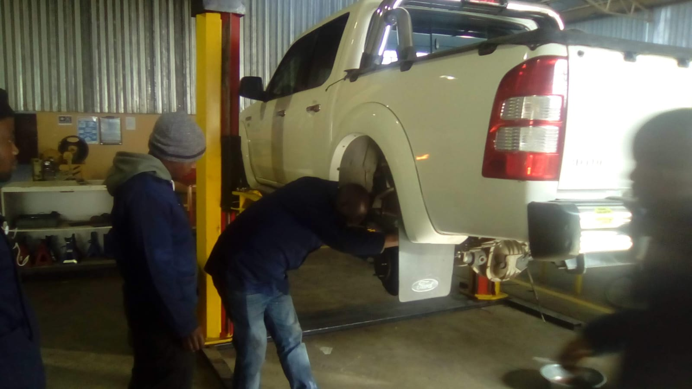
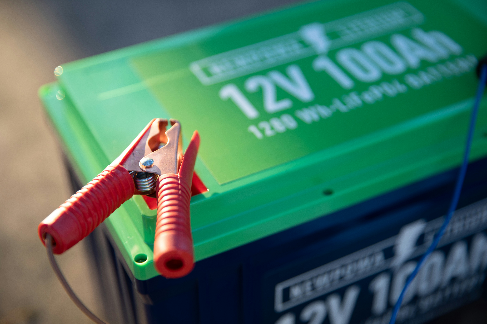

Our Automotive Services
Vhaluvhuu Automotive Repairs provides a range of professional vehicle repair and maintenance services. Our aim is to help customers keep their vehicles safe, reliable and roadworthy.
Engine Repairs
We provide engine inspection, diagnosis and repair services. Our services are designed to identify engine problems and helps restore vehicle performance.


Enquire About This Service
Brake Repairs
We provide brake inspection and repair services, including checking brake components and identifying problems that may affect vehicle safety.



Enquire About This Service
Vehicle Diagnostics
Our diagnostic service helps identify mechanical and electrical problems in vehicles. Diagnostic checks can help determine the cause of warning lights and vehicle performance problems.

Enquire About This Service
Suspension Repairs
We inspect suspension components and assist with repairs when problems such as worn suspension components affect the vehicle's handling and comfort.



Enquire About This Service
Battery Services
Battery services include battery checks and replacement when necessary. We help customers identify battery-related problems that may affect vehicle starting.


Enquire About This Service
Oil Changing
Our oil changing is extraordinary, we make sure to clean the oil tank before changing the oil. We always ensure to change it with a new clean oil.


Enquire About This Service
Need a Vehicle Repair?
Contact Vhaluvhuu Automotive Repairs to find out more about our services or make an enquiry.
Make an Enquiry